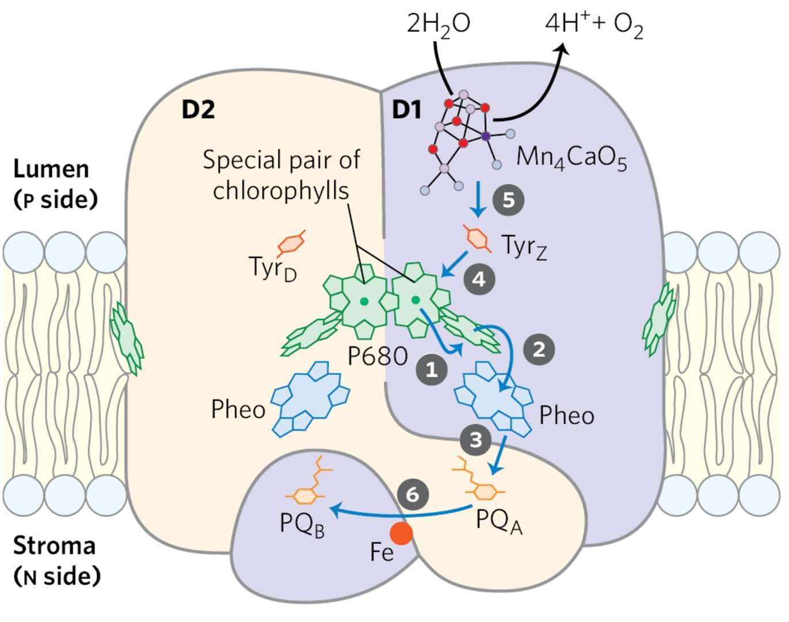
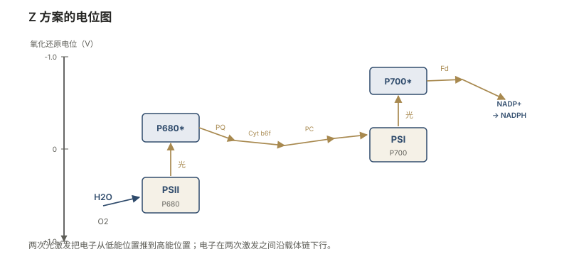

BIO105 · 第 6 章
光合作用的化学
Chemistry of Photosynthesis
虚线下划线为术语；悬停查看中文、英文与释义，完整词典见“术语”。
本章目录
本讲从光子的能量算起，经色素吸收、激子传递、两个光系统的串联（Z 方案），走到类囊体膜上的质子梯度与 ATP 合成，并比较不同光合细菌的反应中心差异。
本章要点
- 叶绿体源自蓝细菌的内共生；基质、类囊体与基粒是其三个关键结构。
- 光子能量由 Planck 方程 E = hν = hc/λ 给出；700 nm 红光的一个 einstein 约 171 kJ，约为合成 1 mol ATP 所需能量的五倍。
- 光色素靠共轭体系吸收可见光；吸收光谱描述“吸收哪些波长”，作用光谱描述“哪些波长真正驱动光合”。
- 激发态可通过荧光（更长波长）或激子传递衰减；天线色素把能量汇集到反应中心，完成电荷分离。
- PSII 的 P680 经 pheophytin 与质体醌 PQB 传递电子，并由 Mn4CaO5 放氧中心裂解水。
- 细胞色素 b6f 与质体蓝素分别对应线粒体的复合体 III 与细胞色素 c。
- PSI 的 P700 被光激发后成为强还原剂，把电子经 A0、QK、FX、FA/FB 传给铁氧还蛋白。
- 环式电子传递不产生 NADPH、不放氧，但仍泵质子；光磷酸化约每放 1 个 O2 合成 3 个 ATP。
6.1 光合作用总览：叶绿体与内共生起源
讲义用一句判断开场：CO2 固定提供了植物所需的全部碳。光合作用把无机碳转成有机物，同时把光能转成化学能。这一过程发生在地球上约一半的光合生物中——讲义强调，地球上约一半的光合活性由微生物完成，而不只是高等植物。
反应发生的细胞器是叶绿体chloroplast。它的来源是内共生endosymbiosis：约 15 亿至 30 亿年前，一个祖先厌氧真核细胞吞入了需氧细菌（蓝细菌），后者未被消化而成为共生体，最终演化为叶绿体。讲义用“蓝细菌是叶绿体的来源”这一句直接给出结论，并配以蓝细菌与叶绿体的电镜图对比。
结构上要区分三个名词：基质stroma是叶绿体内的水相空间，CO2 固定在这里进行；类囊体thylakoid是内膜系统形成的扁平囊，光合电子传递链与 ATP 合酶都嵌在它的膜上；基粒grana是类囊体堆叠形成的结构，极大增加了膜面积。类囊体的内腔（lumen）是质子积累的地方——这一点在 6.9 节会决定 ATP 合成的驱动力方向。
讲义把叶绿体的光磷酸化与线粒体的氧化磷酸化并列比较，指出两者高度相似：都是电子传递链 + 质子梯度 + ATP 合酶。差别在于电子来源与最终受体：线粒体从 NADH/FADH2 取电子、交给 O2；叶绿体从水取电子、交给 NADP⁺。同样的机器，反向的“入口”。
L6 p.4–10
6.2 光子的能量：Planck 方程与 einstein
光是一种电磁辐射。单个光子的能量由 Planck 方程Planck equation给出：
其中 h 是 Planck 常数（6.63 × 10−34 J·s），ν 是频率（cycles/s），c 是光速（3.00 × 108 m/s），λ 是波长（m）。这个式子说明：波长越短，单个光子的能量越高。蓝光比红光能量高，紫外比可见光更高。
化学家习惯按“摩尔光子”计量。一爱因斯坦einstein定义为 6.022 × 1023 个光子，即阿伏伽德罗常数个光子。
讲义给出一个完整的算例：维管植物用于光合的光波长约 700 nm。先算单光子能量：
再乘以阿伏伽德罗常数：
结论值得记住：一摩尔红光光子约含 171 kJ 能量，约为合成一摩尔 ATP 所需能量（30.5 kJ/mol）的五倍。这个“五倍”的余量说明光合作用在能量上有相当大的冗余，多余部分会以热或荧光的形式耗散。
L6 p.11–14
6.3 光色素、吸收光谱与作用光谱
光要被利用，先要被吸收。讲义列出四类光色素photopigment：叶绿素 a（chlorophylls a）、β-胡萝卜素（β-carotene）、叶黄素（lutein）与藻蓝胆素（phycocyanobilin）。它们的共同点是含有共轭双键体系——图中以阴影标出——共轭体系中的离域电子容易被可见光波长的光子激发。这正是第 3 章“共轭决定颜色”的直接应用。
两类色素分工不同：原初光色素（primary photopigment）位于反应中心，直接把电子送出；次级光色素（secondary photopigment）即天线色素，负责吸收光并把能量传给反应中心。叶绿素 a 是唯一能执行原初反应的色素，其余色素把能量“接力”给它。
两个光谱概念必须区分：
- 吸收光谱absorption spectrum：某种色素在不同波长下吸收光的强弱，是分子的物理性质；
- 作用光谱action spectrum：不同波长的光实际驱动光合作用的效率，是生理指标。
讲义给出两种测定作用光谱的方法。经典方法是让棱镜分光后的光照射丝状光合藻，逐段观察哪些波长能驱动光合；现代方法用氧电极oxygen electrode测量不同波长下的 O2 产生速率。两种方法都指向同一结论：作用光谱的峰与叶绿素的吸收峰大致吻合，从而证明叶绿素是光合的有效色素。
L6 p.15–17
6.4 激发态、荧光与激子传递
分子吸收光子后，电子被提升到更高能的轨道，形成激发态excited state。激发态不稳定，电子会迅速回落到低能轨道。回落有两条路径，讲义各给出一条：
第一条是发光。伴随激发态衰减的发光称为荧光fluorescence。它有一个固定的规律：荧光波长总是长于（能量低于）被吸收的光。原因是电子在回落前先经历了一部分非辐射的能量损失，因此发射的光子能量小于吸收的光子能量。这条规律在考试中常以“荧光波长更短”作为干扰项。
第二条是能量转移。激发能可以直接传给邻近的分子，而不必发射光子。传递的单位称为激子exciton——正如光子是光能的量子，激子是这种能量传递过程中的能量量子。这一过程称为激子传递（exciton transfer）。
激子传递是光合作用高效的关键。讲义描述光系统的组织方式：在类囊体膜上，光系统紧密排列，每个反应中心周围有数百个天线叶绿素与辅助色素。任何一个天线色素吸收光子，都会通过激子传递把能量送到反应中心。这相当于把“捕光截面”放大了数百倍——反应中心本身很小，但它拥有一个巨大的天线阵列。
Clean vector diagram of a photosystem in the thylakoid membrane: a reaction center complex surrounded by several hundred antenna chlorophyll molecules, wavy arrows showing exciton transfer hopping between antenna pigments toward the reaction center, and at the center a charge separation step drawn as an electron leaving the special pair toward the primary acceptor. Flat 2D, thin 1.5 px strokes, muted slate blue and warm grey palette, white background, English labels, no cartoon, no gradient, no shadow.
能量到达反应中心后，发生的是电荷分离：激发态的电子被传给受体，留下带正电的色素。这一步把“光能”正式转成“化学能”——从此电子开始在氧化还原链上流动，而不再以激子的形式跳跃。
L6 p.18–20
6.5 光系统 II：P680 与水的裂解
光合作用的起源可以追溯到约 25 亿年前出现的蓝细菌。讲义给出的假说是：蓝细菌获得了两个光系统——一个类似现今紫色细菌中的类型，另一个类似绿硫细菌中的类型。两个系统串联，才使水成为电子供体、氧气成为副产物。
光系统 IIphotosystem II, PSII 的反应中心色素是 P680。它的工作循环可以写成一个四光子的总反应：
注意产物中的 P680⁺：色素失去电子后成为自由基阳离子（radical cation）。这是一个极强的氧化剂，正是它有能力从水中夺取电子。电子经脱镁叶绿素pheophytin, Pheo传给质体醌 PQB，PQB 接受两个电子与两个质子后成为 PQBH2。
水的裂解发生在放氧中心oxygen-evolving center, OEC。讲义给出的核心是一个金属簇 [Mn4CaO5]，其结构由 X 射线晶体学解析（Nature 2011, 473: 55–60）。反应分三步：
4 •Tyr + [Mn4CaO5]0 → 4 Tyr + [Mn4CaO5]4+
[Mn4CaO5]4+ + 2H2O → [Mn4CaO5]0 + 4H⁺ + O2
第一步，P680⁺ 从酪氨酸（Tyr）夺取电子，生成酪氨酰自由基（tyrosyl radical，•Tyr）；第二步，酪氨酰自由基从锰簇夺取电子，把锰簇氧化到 +4 价；第三步，高价的锰簇从两分子水中夺取四个电子，释放四个质子与一分子 O2，自身回到 0 价。整个循环需要四个光子，因为每吸收一个光子只完成一次单电子转移。
讲义在放氧中心的示意图上标出 +0.8 V 与 +1.2 V 两个电位，用来表示从 P680 到水氧化这一步所跨的电位范围。P680⁺ 作为自由基阳离子，其电位足够正，因而有能力从水中夺取电子——这也是“为什么水能被裂解”的定量回答。相比之下，PSI 的 P700 电位要负得多（见 6.7），两个系统一正一负，才构成完整的电子阶梯。

Clean vector cross-section of photosystem II in the thylakoid membrane showing the P680 special pair, pheophytin, the two plastoquinone sites PQA and PQB, and on the lumenal side the Mn4CaO5 cluster drawn as four manganese atoms, one calcium atom and five oxygens, with arrows tracing electrons from water through the cluster to tyrosine, to P680, to pheophytin and on to PQB, and protons released into the lumen. Flat 2D, thin 1.5 px strokes, muted slate blue and warm grey palette, white background, English labels, no cartoon, no gradient, no shadow.
L6 p.22–27
6.6 细胞色素 b6f 与质体蓝素
PSII 产生的 PQBH2 把电子交给下一站。细胞色素 b6f 复合体cytochrome b6f complex的功能与线粒体的复合体 III（细胞色素 bc1）高度类似：它从还原型醌（叶绿体中为 PQB）接受电子。讲义用“like Complex III of mitochondria”直接点明这一对应关系。
两个系统的部件可以一一对照：
- 线粒体的泛醌（ubiquinone, Q）↔ 叶绿体的质体醌（plastoquinone, PQ），两者的异戊二烯尾链长度均为 n = 4–8；
- 线粒体的细胞色素 c ↔ 叶绿体的质体蓝素plastocyanin，后者是可溶性的含铜蛋白，一次搬运一个电子，位于类囊体内腔一侧。
质体蓝素把电子送给 PSI 的 P700⁺。这个顺序很重要：电子从 PSII 出发，经 PQBH2 → b6f → 质体蓝素 → PSI，是一条单向的“接力”。b6f 在这一步同时把质子从基质泵入类囊体内腔，为 ATP 合成积累梯度。
L6 p.28–31
6.7 光系统 I 与 Z 方案
光系统 Iphotosystem I, PSI 的反应中心色素是 P700。它被光激发后失去电子，形成 P700⁺。讲义强调：P700⁺ 是强氧化剂，会迅速从质体蓝素取得电子——这一点与 PSII 的 P680⁺ 从水取电子形成对照，两者都是“失去电子后变成强氧化剂”，但电子供体不同。
PSI 的结构是一个对称的三聚体（symmetric trimer），每个单体周围有捕光复合体（light-harvesting complexes, LHC）。电子传递路径是：
细节上，P700 把电子传给邻近的叶绿素 A0，再传给叶绿醌 QK；还原型 QK 被重新氧化时，把两个电子一个一个地交给 Fe-S 中心 FX；从 FX 出发，电子再经 FA、FB 两个 Fe-S 中心，最终交给基质中的铁氧还蛋白。注意这里又出现了“两电子载体（QK）转单电子载体（Fe-S）”的转换，与线粒体复合体 III 的问题同构。
把两个系统画在同一张电位图上，就得到著名的 Z 方案Z scheme。讲义给出两条关键描述：
- Z 方案展示从 H2O 到 NADP⁺ 的线性电子传递路径；
- 每个电子必须被光子“抬升”两次——一次在 PSII，一次在 PSI。
为什么需要两次抬升？因为从水（+0.8 V 左右）到 NADP⁺（约 −0.32 V）的电位跨度太大，单个光子的能量不足以一次跨越。两个光系统串联，相当于两级水泵接力：PSII 把电子从水的电位抬到中间水平，PSI 再抬到足以还原 NADP⁺ 的水平。图上因此呈现字母“Z”的形状——先上升、再下降、再上升。
PSI 的激发态电位约为 −1.2 V，这使 P700* 成为极强的还原剂，足以把电子传给铁氧还蛋白（E′° = −0.432 V）。随后铁氧还蛋白把电子交给 NADP⁺，生成 NADPH。


绘图提示词
Clean vector Z-scheme diagram with standard reduction potential on the vertical axis from plus 1.0 to minus 1.4 volts and reaction progress on the horizontal axis: water at the top left, an upward photon arrow lifting electrons at photosystem II through P680 and pheophytin down to plastoquinone, cytochrome b6f and plastocyanin in the middle, a second upward photon arrow at photosystem I through P700, A0, phylloquinone and the Fe-S centers to ferredoxin and finally NADP+ at the lower right. Flat 2D, thin 1.5 px strokes, muted slate blue and warm grey palette, white background, English labels, no cartoon, no gradient, no shadow.
L6 p.32–34
6.8 环式电子传递
线性电子传递之外还有一条支路：一部分电子从铁氧还蛋白回流到 PQB，重新进入细胞色素 b6f。这条路径称为环式电子传递cyclic electron transfer。
它的产物与线性路径有明确的差别。讲义指出：环式电子流不伴随 NADPH 的净生成，也不释放 O2；但它伴随质子泵送。因此环式路径的唯一净产出是质子梯度（进而 ATP），不产生还原力。
这解释了植物为什么需要两条路径。线性路径同时产出 ATP 与 NADPH；当细胞需要额外 ATP 时，就启动环式路径，只补 ATP 不补 NADPH。这是一条灵活的“配平”机制。
讲义还给出铁氧还蛋白到 NADP⁺ 的还原反应，由铁氧还蛋白:NADP⁺ 还原酶（ferredoxin:NADP⁺ reductase）催化：
注意化学计量：两个还原型铁氧还蛋白各给一个电子，才能把 NADP⁺ 还原为 NADPH。这与“单电子载体必须两两配对才能还原两电子受体”的规则一致。
L6 p.35
6.9 光磷酸化的化学计量
讲义用一张总览图收束电子与质子的路径：蓝色箭头表示电子从 H2O 经 PSII、细胞色素 b6f、PSI，最终到 NADP⁺；红色箭头表示质子被泵入类囊体内腔（经 b6f），再经 ATP 合酶的 CFo 回到基质。
测得的质子梯度很大：类囊体膜两侧的 H⁺ 浓度差达 1000 倍，即 ΔpH = 3。与线粒体不同的是，在叶绿体中 ΔpH 是主要分量，而电势差被反离子的移动抵消（讲义写作“counterion movement apparently cancel the electrical potential”，因此 Δψ ≈ 0）。这一点是本节最容易被忽略的考点——线粒体靠 Δψ 与 ΔpH 共同驱动，叶绿体几乎只靠 ΔpH。
把 Δψ = 0 代入质子动力的公式：
这是每摩尔质子的能量。线性电子传递每释放一个 O2 会转移 12 mol 质子，总能量约 200 kJ——足以驱动数摩尔 ATP 的合成（ΔG° = 30.5 kJ/mol）。实验测量给出的结果是每放 1 个 O2 约合成 3 个 ATP。
这个比例（3 ATP : 1 O2）是光合磷酸化的标志性数字，与线粒体氧化磷酸化的比例不同，因为两者的质子化学计量与 ATP 合酶结构不同。考试中若问“光合作用每释放一分子氧产生多少 ATP”，答案就是 3。
L6 p.36–38
6.10 其他光合细菌与蓝细菌的双系统
并非所有光合生物都像植物那样裂解水。讲义给出清晰的分类：蓝细菌同时拥有 PSII 与 PSI，因此能裂解水、放出 O2；其他光合细菌只有单个反应中心，不裂解水、不产生 O2，必须使用其他电子供体。
绿硫细菌用硫化氢：
另一些光合细菌用乳酸等有机物：
两式可以合并为通式，其中 H2D 是电子供体、D 是其氧化形式：
产物 (CH2O) 代表碳水化合物。讲义据此推测：最早发展出光合能力的细菌很可能以 H2S 作为电子来源——因为 H2S 在早期地球大量存在，而且用它比用水容易得多（不需要达到 +1.2 V 的氧化电位）。水被用作电子供体是后来的“创新”，代价是需要两个光系统串联。
蓝细菌的地位很特殊：它既能进行氧化磷酸化，也能进行光磷酸化，两套机器位于高度褶皱的质膜上（multiple layers of internal membranes）。讲义认为这提供了共同演化起源的证据——同一套化学渗透机制，只是电子入口不同，时间可追溯到约 25 亿年前。
最后，讲义引用 Hahn 等人 2018 年发表于《Science》360 卷 620 页的叶绿体 ATP 合酶冷冻电镜结构，展示质子经 CFo 的路径：关键残基包括谷氨酸（Glu）与赖氨酸（Lys），其中 Glu 处于去质子化状态，参与质子的接力和传递。这与第 5 章线粒体 ATP 合酶的旋转催化是同一机制在不同细胞器中的实现。
L6 p.39–41